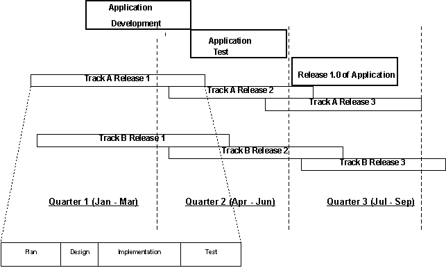

| Guideline: Infrastructure Testing |
 |
|
1 ScopeTo an applications developer, the concept of testing an infrastructure is not a normal process to be considered. And yet, as developers hasten to go to market quickly with newer technology and coding techniques, the environment on which these applications run are frequently suspect for delaying rollout or negatively affecting the final implementation. An infrastructure test is designed to verify that the way a system has been architect will support the applications that reside on it. It is a validation of the basic operating setup of hardware, software, network and interfaces and includes verification in regards to performance, capacity, load, security and business recovery functions as dictated by non-functional requirements of the application systems. Typically an enterprise operates more than one environment, one for development, one for final Quality Assurance, another for production. The infrastructure test may be applied to all of the various environments, or to part of one environment such as a specific platform (e.g. Unix servers). Finally, an Infrastructure test may occur at varying times during the construction of these environments. 1.1 A Short description of the Infrastructure Testing Engagement ModelThe Infrastructure Testing Engagement Model describes testing technical or structural components: hardware, software, operating systems and network connectivity. It also includes testing the supporting operational processes. At a minimum, the following levels of testing or test focus areas are included in every Infrastructure testing engagement:
1.2 A Brief Review of TerminologySome terms found that throughout this White Paper may be confusing. Although these definitions are not official, for the purposes of this document, please consider the terms used as follows: Infrastructure: Infrastructure includes all aspects of the physical and operating environment within an enterprise, including network, system software, procedures. Environment: An environment would be one instance of an infrastructure. For example, the target of testing may be only the QA environment set up for the purposes of testing applications in ‘close-to-production’ conditions. Other targets of testing may be the Production environment, a Sandbox environment (used to try out new concepts or software), or a Development environment. Platform: This is used, within this document, to refer to a specific portion of one environment such as a ‘server farm’ or components which have similar characteristics such as the NT platform or Unix platform (assuming that each component is similarly configured and operated). 2 ContentThis White Paper will expand on the above definition by answering the following questions: What is the scope of Infrastructure Testing? Why Conduct Infrastructure Tests? What makes Infrastructure Testing unique? What unique tasks should you expect to encounter in the Infrastructure Testing Engagement Model? What are some practical suggestions for approaching an Infrastructure Test? 3 What is the Scope of Infrastructure TestingThe Scope of Infrastructure testing may extend from a structural test to include testing of critical application systems that operate within that infrastructure. The structural components that may be targeted for testing include:
As the testing of an Infrastructure expands, it may include all levels of testing normally applied to application development such as Systems Integration, and Operability testing. Acceptance testing is executed after Environment test (see below) or following Systems Integration testing, whichever is performed last. As the diagram below shows, the distinction between application and infrastructure testing becomes fuzzy. After the Environment test is conducted on an environment, application systems are used to continue the Infrastructure test. The ‘intent’ of the Infrastructure test, however, is different since the goal is to determine to what extent a target environment prevents or diminishes an application or application systems from operating according to their design goals.
4 Why Conduct Infrastructure Tests?The ideal goal of an infrastructure is to run as adaptive, scaleable, available and secure as possible while supporting the enterprise application systems. These goals cannot be achieved without adequate testing. As an infrastructure evolves, testing to ensure it supports critical applications is crucial. Tests may be conducted at any interval but should be especially considered under circumstances involving significant IT change such as:
Tests may be conducted as part of ongoing Performance analysis of an environment in cooperation with Capacity Planning and Performance Management. Infrastructure testing, when performed as an integral part of critical application development, should verify the underlying structure to ensure the applications will perform as specified and according to expectations (service level). Infrastructure testing supplies the knowledge upon which critical business decisions may be made – to decentralize, to expand, to change development standards, to outsource, etc. Testing the infrastructure provides value by ensuring that the environment will support the business processes and thereby decrease downtime, maintain credibility, improve productivity, prevent unauthorized access to data. A company that is not ‘open for business’ will quickly lose clients and revenue. 5 What Makes Infrastructure Testing Unique?From an application developer’s perspective, the engagement model may be different from the full life-cycle-testing model in some respects. Here are a few key differences: Environment is the test targetA major difference between Infrastructure testing and testing an application system is that the Infrastructure exists (that is, what you are testing). In application development testing, you may specify the infrastructure you want, build it, and then test the application. In Infrastructure testing, the environment is the target of your testing and up to a point, no changes to that environment are made to facilitate the tests. Nonetheless, once you go past Environment tests of an infrastructure, some adjustments to system software, such as turning on transaction tracking, may be needed to complete the Infrastructure test. Multiple Environments Requiring TestsA typical organization includes multiple test environments to support the full development of an application system. For example, the enterprise typically creates, at a minimum, a development environment, and a QA environment prior to migrating to a production environment, which may by modified or upgraded itself. For that reason, a series of test levels (system verification, system test, acceptance test plus others as needed) will be planned and executed on each environment. The tests are conducted in the same manner on each environment with the exception that more critical environments may include additional test types such as performance tests or security tests to ensure the infrastructure has the required capacity, and integrity to enable the application to be safely implemented. Environments under Constant ChangeIt is highly likely, due to today’s rapid development demands, that environments are installed and implemented in logical groups of components to coincide with the application build delivery schedule. This represents an additional challenge on the Infrastructure tester who may have to iterate through tests conducted previously on an environment, as new hardware and software are added. Not only does this represent a potential for repeat testing but also there may be crucial timing issues. Testing of infrastructure and application builds may occur during a time period after which either application or environment may undergo additional change. Concept of ‘Tracks’A track is a work effort to deliver components of the infrastructure, typically in support of e-commerce applications. These components can be common functions used by many applications (security, content management, and directory services), or they can be facilities (such as physical systems and architecture.) Tracks are usually planned in such a manner as to coincide with application ‘Builds’ from Development and frequently in a scheduled delivery cycle such as in 90-day intervals. The following chart illustrates, from an application developer’s perspective, some of the issues associated with the interdependence of application and track release schedules. In this situation, tracks are being scheduled for release one-per-period, perhaps quarterly, and the content of each track must be coordinated such that it satisfies the need for development without holding up structural growth. 
Just as in application development process, the track release process includes points in the process for business risk assessment, Quality Assurance, and determination of the levels of testing that will be performed. There is a need for flexibility in dealing with interdependencies of application and track releases. The time pressures of deploying e-commerce applications results in a need for very close cooperation. For example, there may be a need to negotiate the content of releases because of the complex interdependencies to keep to agreed schedules. Building flexibility into the process will allow an overlap of application development and test with track releases. Integrating testing into the release process will allow many tests to be run in parallel, improving time to market. Aligning the test process with the release process will require Quality Assurance involvement from the beginning of the design and will result in more realistic schedules. 6 What Unique Tasks Should You Expect to Encounter in the Infrastructure Testing Engagement Model?Test Strategy Vs Master Test PlanDepending upon the complexity and scope of the Infrastructure test, there may not be a need to develop a Master Test Plan. If conducting an Environment test on a single environment, for example, a Test Strategy will suffice. A master test plan is recommended under the following conditions:
A new test level – Environment TestAs shown in the diagram in section 4.0, an Environment Test is conducted on the Infrastructure without the use of business applications. In general, the purpose of an Environment test is to validate the system and system software and perform a system test. From an application developer’s perspective, an ‘Environment Test’ combines the testing levels of Unit test, Integration test and System Test. Unit testing in the context of an infrastructure test means that the servers and their operating systems are verified to be at the correct levels and the network connections are allowing the servers to communicate properly. Integration testing in the context of an infrastructure test means that the vendor software and services installed on the servers are verified to be at the correct levels and that their installation verification procedures and simple utilities indicate that they are properly installed. System testing in the context of an infrastructure test means that the environment will be tested with an application driver that will exercise the functions of the system together as defined in the infrastructure use case scenarios. Flexible Testing Levels based on risk, and client needs.One testing approach, following an Environment test, would be to conduct an acceptance test and the engagement would end. However, since risk mitigation is limited without introducing application systems, further test levels are recommended. Unless Infrastructure Testing is integrated with other test engagements (e.g. Full Life Cycle test, e-business testing), Infrastructure test plans should consider a Systems Integration test, and Operability test to ensure the infrastructure adequately supports the critical systems being developed for the enterprise. Specialized TestingAs shown in the diagram in section 4, ‘specialized’ testing such as Performance testing is planned separately but for the purposes of this EM, is appended and performed with a Systems Integration test. Each specialized test should have its own execution plan. The results of all such tests are reported in the Systems Integration Test Report. Examples of specialized testing are:
7 Some Practical Suggestions for Approaching an Infrastructure TestLocation and role of specialized testingSecurity, Performance, Stress, Business Recovery, Scalability, Availability are all general names for testing which require expertise and specialized planning. Each may be conducted over the life of the Infrastructure test or may be isolated to very specific time periods or may be directed at specific parts of the environment. Expertise should be obtained prior to beginning any engagement in which such testing is a client requirement. Baseline material to be collectedPrior to beginning any part of an Infrastructure test, existing material should be collected. There may a wealth of information already available in the forms of Architecture documents, or even baseline Performance data. Each of these work products may be valuable or may be useless, depending upon whether they are current or represent the Infrastructure in its current configuration. The validity of these documents should be validated. This is a useful exercise to conduct even if the material does not prove to be completely valid as it provides a useful historical perspective. Nonetheless, as validation can be a lengthy process, a realistic assessment is usually necessary to evaluate whether to collect new baseline material or rely on existing documents. ToolsObviously a large number of tools exist to assist with capturing and reporting results of an Infrastructure test. In most cases, the use of tools will be restricted due to budget considerations, client preferences or simply the time to obtain and install the software. Keep in mind when acquiring new tools or resurrecting old ones, to allow for time to research and obtain the right version of the product. Research the proper installation technique, train the users of the tool so that they can properly interpret results and test the tool so that it operates according to the supplier’ specifications and the user’s expectations. Finally, be cognizant that tools themselves may impact the results of the test. Although tool selection may have to be delayed until the complete details of the test plan are known it is recommended, for all the above reasons, the tools be implemented and set up on the environment they will be used to test, as early in the test cycle as possible. In addition to using features and services supplied by the operating system or by System software such as CICS or DB2, some of the more common tools used in Infrastructure testing include the following.
Risk AssessmentInfrastructure testing may be directed at a small portion of a critical environment or be focussed on several environments in a broad scale. Testing the Infrastructure can also be repetitive as changes are made to improve tuning, capacity or performance. Regardless of the scale of the test, there will be significant trade-offs. Be aware of the Risks, document them, and develop mitigation strategies. Present them to the client sponsor so that enlightened decisions may be made. |

| © Copyright IBM Corp. 1987, 2012 All Rights Reserved Property of IBM These materials are intended only for use as part of an IBM engagement |